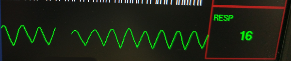

Check agreement of bellows action and respiratory waveform.
Prerequisites
notice
Risk of Equipment Damage
Completely remove the Quad Head Coil from the cradle before performing any body scans. Failure to do so may damage the head coil T/R network.
Procedure
Connect bellows to the Patient Table Interface module.
Click the Gating tab on IRD.
Click Respiratory (human lungs icon).
The respiratory waveform appears.
Figure 1. Respiratory waveform

notice
Risk of Improper Operation
Never vent the bellows. Always connect the bellows to the PAC Assembly before stretching it. Failure to connect bellows to PAC Assembly first causes inaccurate waveforms and, therefore, inaccurate results.
Take the respiratory bellows in both hands and gently pull on either end.
Manually operate the bellows to duplicate the motion of typical regular breathing. If the bellows and respiratory compensation software are working properly, the waveform agrees with the actions of the bellows. If the waveform does not agree with the action of the bellows, proceed by troubleshooting the bellows (for tears or holes), connections and then the PAC assembly for problems.
note: The respiratory waveform displays on the IRD.
Make sure the waveform displays the action of the bellows.